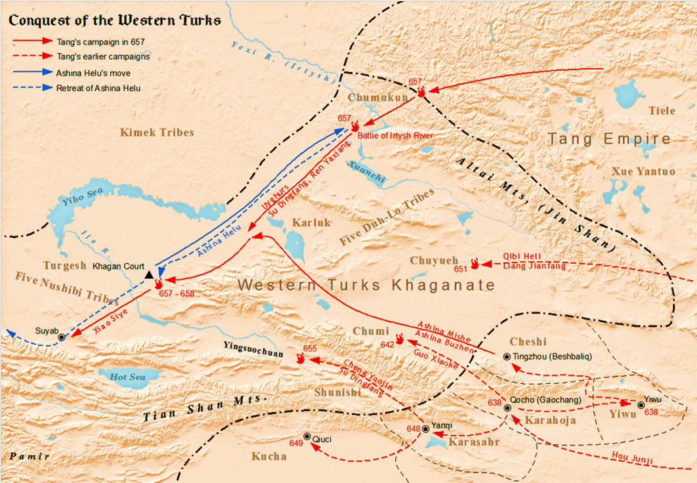

The Western Turkic Khaganate
(581-657)
Byzantine Relations
In 563 the Turks sent an embassy to reach Constantinople and met with Emperor Justin II (565-574), marking the first contact of the Turks with the Roman Empire.
At first their negotiations revolved around the the Avars, a nomadic coalition consisting of Rouran and other clans that fled the Göktürk ascendance.
Negotiations later turned towards trade, as the Turks controled a significant section of the silk road and offered the Byzantines and opportunity to strengthen trade north of the Caspian Sea to avoid the Sassanids.
In 576 tensions between the Turks and Byzantines was greatly hightened, due to Turkic concern that the Byzantines were protecting the Avars, while the Byzantines were concerned at being unable to solicit Turkish help against the Sassanids. In response the turks invaded Crimea, making it to the western edge before a failed siege at Chersonesus.
A generation or so later tensions had shifted, and the Turks ended up allying with the Byzantines in the Byzantine-Sassanid war of 602-628.
In 576 tensions between the Turks and Byzantines was greatly hightened, due to Turkic concern that the Byzantines were protecting the Avars, while the Byzantines were concerned at being unable to solicit Turkish help against the Sassanids. In response the turks invaded Crimea, making it to the western edge before a failed siege at Chersonesus.
A generation or so later tensions had shifted, and the Turks ended up allying with the Byzantines in the Byzantine-Sassanid war of 602-628.
Sassanid Relations
The Turks initially had alied themselves with the Sassanids upon meeting them, working together from 557–565 to conquer the Hephthalites in Bactria.
However in 568 Turkic ambassadors attempted to negotiate trade with the Sassanids which was met with hostility, as the Sassanids were attempting to restrict the access of the Byzantines to Eastern goods.
This eventually resulted in an incident where Turkic diplomats were poisoned, causing a war that lasted until 571, although little was truly resolved at the truce.
In 588-589 Bagha Khagan attempted an invasion of Sassanid territory, attempting to bring all of the old Hephthalite territory under Turkic control. Bagha was killed in battle and the Sassanids quickly mustered forces to take significant territory from the Turks before a truce was signed. The Second Perso-Turkic War began in 606 in an attempt by the Turks to regain this lost territory, but they were quickly defeated as well.
Starting in 602, a long and bloody war broke out between the Sassanids and Byzantines. From 602 to 622 The Sassanids had great success, conquering much of the Levant, Egypt, several islands in the Aegean Sea and parts of Anatolia. From 622 to 626 however the emperor Heraclius counterattacked and regained most of this lost territory. In 626 the Sassanids made a final push, allying with the Avars of Eastern Europe and laying Siege to Constantinople. Under great pressure, the Emperor offered considerable sums of money to the Turkic Khagante for an alliance, which was accepted. After the war that had bled dry both the Byzantines and Sassanids, the Turks had considerble success in the fighting. The war ended when a civil War broke out among the Sassanids from 628-632, resulting in a peace agreement.
In 588-589 Bagha Khagan attempted an invasion of Sassanid territory, attempting to bring all of the old Hephthalite territory under Turkic control. Bagha was killed in battle and the Sassanids quickly mustered forces to take significant territory from the Turks before a truce was signed. The Second Perso-Turkic War began in 606 in an attempt by the Turks to regain this lost territory, but they were quickly defeated as well.
Starting in 602, a long and bloody war broke out between the Sassanids and Byzantines. From 602 to 622 The Sassanids had great success, conquering much of the Levant, Egypt, several islands in the Aegean Sea and parts of Anatolia. From 622 to 626 however the emperor Heraclius counterattacked and regained most of this lost territory. In 626 the Sassanids made a final push, allying with the Avars of Eastern Europe and laying Siege to Constantinople. Under great pressure, the Emperor offered considerable sums of money to the Turkic Khagante for an alliance, which was accepted. After the war that had bled dry both the Byzantines and Sassanids, the Turks had considerble success in the fighting. The war ended when a civil War broke out among the Sassanids from 628-632, resulting in a peace agreement.
Chinese Relations

Tang dynasty's campaign map against the Western Turks.
In 630, just as the Turks were achieving great success against the Sassanids, Tong Yabghu Khagan was assassinated by his uncle Külüg Sibir.
This caused a fracturing of the Khaganate and a period of instability, with Külüg Sibir taking some control of the tribes.
However several tribes rejected his rule and became effectively independent.Tang dynasty's campaign map against the Western Turks.
That very same year, the Eastern Khagante submitted to the rule of the Tang Dynasty in China. The Tang continued to push west, taking several smaller kingdoms along the silk road. The Tang general Su Dingfang led an invasion army into Turkic territory in 655, taking advantage of the Turkic tribal instability to draw allies. In 657 he defeated Ishbara Khagan (known to the Chinese as Ashina Helu) in battle, and during the retreat a rebellious Turkic tribe took the Khagan prisoner and handed him over to the Chinese.
The Central Asia was now entirely dominated by the Tang Dynasty, representing the height of its power. Puppet Khagans were put in place to rule over the territory, as it was far enough away to prove difficult for the Chinese to directly control.